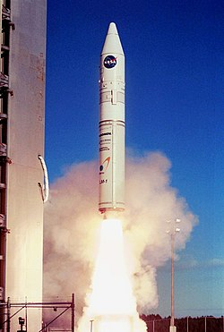
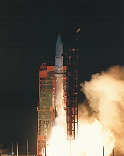
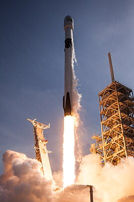
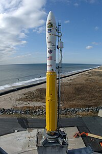
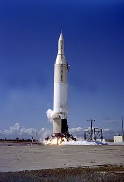

Athena I
Athena I foi um foguete construído pela Lockheed Martin com capital privado e pertencente à família de foguetes Athena. Foi retirado do serviço por não obter os benefícios esperados.
Atlas G
O Atlas G, foi um veículo de lançamento descartável de origem Norte americana. Originalmente projetado e construido pela Divisão Convair da General Dynamics em San Diego, na Califórnia. Ele fazia parte da família Atlas de foguetes e foi criado a partir do míssil SM-65 Atlas. O Atlas G, foi usado para lançar alguns satélites de comunicação na segunda metade da década de 80.
Atlas H

O Atlas H, foi um veículo de lançamento descartável de origem Norte americana. Originalmente projetado e construido pela Divisão Convair da General Dynamics em San Diego, na Califórnia. Ele fazia parte da família Atlas de foguetes e foi criado a partir do míssil SM-65 Atlas. O Atlas H, foi usado para lançar cinco satélites militares de geolocalização (NOSS) para a Marinha dos Estados Unidos.
Falcon 1
O Falcon 1, foi um veículo de lançamento descartável, desenvolvido pela SpaceX durante o período de 2006-2009. Desenvolvido com o intuito de minimizar o custo por lançamento para satélites em órbita terrestre baixa, aumentar a confiabilidade, otimizar o ambiente de voo e minimizar o intervalo entre lançamentos. Ele também foi usado para testar componentes e conceitos de desenhos estruturais que viriam a ser usados no Falcon 9.
Minotaur V
O Minotaur V é um sistema de lançamento descartável Norte americano, derivado do Minotaur IV, este por sua vez, derivado do míssil LGM-118 Peacekeeper. Ele é produzido e operado pela Orbital Sciences Corporation, e fez seu voo de estreia em 07 de setembro de 2013, carregando a sonda LADEE para a NASA.[1] O Minotaur V é um veículo de cinco estágios e foi concebido para colocar 630 kg de carga útil em órbita de transferência geoestacionária (GTO), ou 342 kg em trajetória de injeção translunar. Ele consiste de um Minotaur IV+, com um Star-37 como quinto estágio. Duas variantes estão disponíveis: uma usando como estágio superior um Star-37FM estabilizado por rotação, e outra usando um Star-37FMV mais pesado, porém com capacidade de estabilização nos três eixos.
Juno II
O Juno II, foi um foguete Norte americano, usado no final da década de 50 e no início da década de 60. Ele era derivado do míssil Jupiter, usado no primeiro estágio. Nos estágios superiores, foram usados motores do míssil MGM-29 Sergeant, sendo: 11 para o segundo estágio, e um para o terceiro.